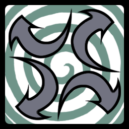

17 |
Emblèmes tribaux |
 |
Il y a deux types de cartes :
Les cartes symboles Il s’agit de cartes où figurent divers symboles. Ces symboles existent en quatre couleurs. Un duel a lieu quand deux cartes aux symboles identiques sont dévoilées. Habituellement, seul le symbole est important, non la couleur SAUF dans les situations où la carte spéciale « Flèches couleur » est retournée...
Voici certaines des diverses formes que vous trouverez sur les cartes... méfiez-vous de leurs subtiles ressemblances!
Cartes « Flèches » Il existe trois types de carte « Flèches ». Il s’agit de cartes spéciales qui ne déclenchent aucun duel, mais changent les règles du jeu.
Carte « Flèches vers l'Extérieur » Quand cette carte est dévoilée, un compte à rebours démarre. À la fin du compte à rebours, tous les joueurs retournent automatiquement une carte. Tenez-vous prêt pour d'éventuels duels!

Carte « Flèches vers l'Intérieur » Quand cette carte est dévoilée, chaque joueur a la possibilité d'attraper le totem. Le premier joueur à attraper le totem met toutes ses cartes retournées dans le pot.
Carte « Flèches couleur » Lors des parties à 4 joueurs ou plus, quand un joueur dévoile une carte « Flèches couleur », les joueurs disposant de cartes aux couleurs identiques doivent essayer de saisir le totem et ce, quelque soit le symbole de leurs cartes. Le joueur qui a retourné la carte « Flèches couleur » ne participe pas à cette manche.
Pour les partie à 3 joueurs, les cartes « Flèches couleur » sont écartées. Quand toutes les cartes retournées sont de la même couleur, c’est la règle « Flèches tournées vers l'Intérieur » qui entre en vigueur.
La manche dure jusqu’à ce qu'un joueur attrape ou renverse le totem ou qu’une autre carte « Flèche » est dévoilée.
|


 |
 |
 |